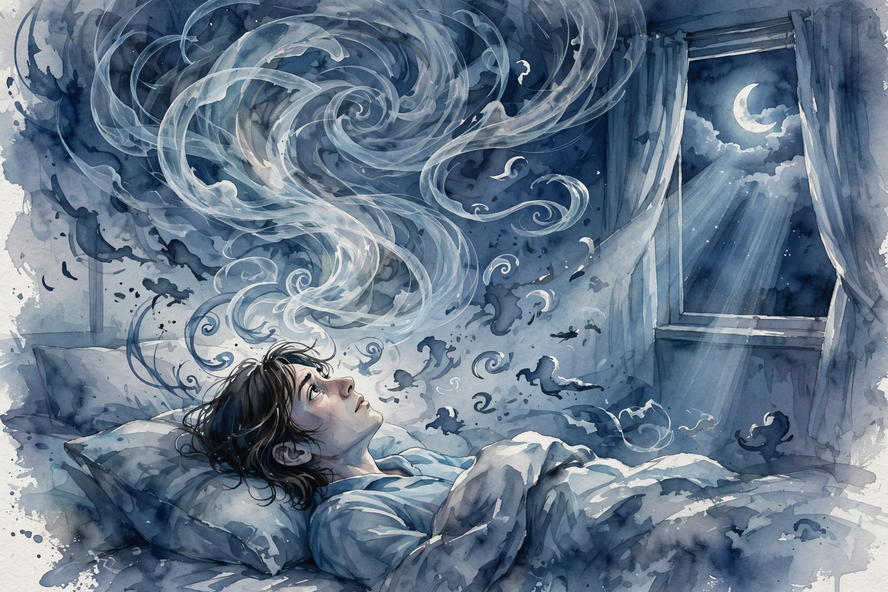

Interactive companion
How to Stop Overthinking

The voice at 3am
Source fact The episode opens with a question: what if the voice that wakes you up at 3am is also the reason you can think clearly at all?
Published research The guest is psychologist Ethan Kross, who directs the University of Michigan Emotion and Self-Control Laboratory and wrote the book Chatter: The Voice in Our Head. His research starts from a double truth: the inner voice is the instrument of clear thought, and it is also the instrument of torment. The same voice that plans your day replays your failures at night.
Nugget 1 · The double truth
The tool and the torment share one voice
What happened. Kross research treats the inner voice as both instrument and affliction: necessary for reasoning, capable of trapping you in loops.
Why it matters. You cannot silence the voice without losing the thinking. The goal is to steer, not to mute.
The principle. Do not fight the voice. Change your seat relative to it.
Source: episode description + published research. Source fact
The man on television
Source fact The episode tells of one of the most reassuring men on television, who privately wrestled with the very same doubt.
Interpretation The description does not name him, and this companion does not guess. The point survives without the name: chatter does not respect resumes. A man whose job is to calm millions can lie awake negotiating with his own voice. That makes it a human feature, not a personal failure.
The stroke that switched it off
Source fact The episode tells what really happened when a neuroscientist stroke switched her inner voice off completely.
Interpretation The description does not name her either. The story functions as a natural experiment: what is a mind without the voice? Whatever peace the silence brought, it also took the narrator with it. The episode question sharpens here. The voice is not the enemy. Unmanaged chatter is.
Distanced self-talk
Source fact The episode closing tool: watching your own thoughts from a distance, like they belong to someone else, can loosen chatter grip.
Published research Kross published research gives the mechanism a name: distanced self-talk. Instead of addressing yourself as I, address yourself by name or as you. In one experiment with Jason Moser, participants viewed disturbing photographs and reflected using immersed language (What am I feeling?) or distanced language (What is he feeling?). Brain monitoring showed much less emotional activity with distanced language, and the relief emerged within one second. One second. It is high on results and low on effort: it does not overtax executive function the way effortful calming techniques do.
Published research The same line of research produced Solomon Paradox: people reason more wisely about problems when they consider them as if they belonged to someone else. Distance is not coldness. It is the vantage point from which wisdom becomes available.
Immersed vs distanced self-talk
The same storm, two seats
Conceptual diagram based on Kross published research. Published research
Illustrative: a concept sketch of the two stances, not measured data.
Nugget 2 · Distanced self-talk
Change the pronoun, change the weather
What happened. One pronoun swap, from I to your name, cut emotional brain activity within a second in the lab.
Why it matters. The cheapest intervention in psychology may be grammatical. No app, no hour of meditation, one word.
The principle. Talk to yourself the way you would talk to a friend. The distance does the work.
Source: Kross and Moser published experiment. Published research
Watch the episode
Official Hidden Brain episode video for How to Stop Overthinking.The official Hidden Brain episode video, embedded via youtube-nocookie.com, the only external dependency on this page.
Nugget index
- Nugget 1. The tool and the torment share one voice (The voice at 3am)
- Nugget 2. Change the pronoun, change the weather (Distanced self-talk)